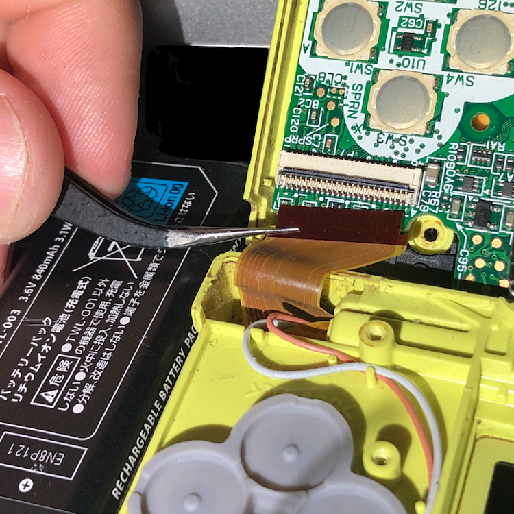

Is your top screen flashing instead? See this:
- Disconnected bottom screen power will make the top screen flash
- Disconnected bottom screen power will make the top screen flash
Description
Turning on the DSi causes the bottom screen to flash, then the console will shut off.May be caused by the top screen being damaged or disconnected.
Solution
First try reseating the ribbon cable.
If your reseating did not fix the screen, you will have to replace your top screen. Try the guides for DSi and DSi XL on ifixit.